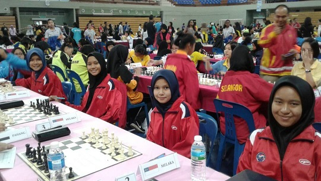
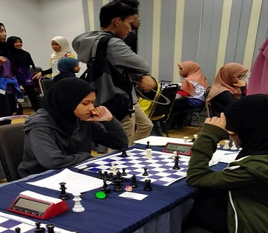

My Experience

MSSM
During 2017, I was chosen as on of the chess player to representative Melaka to
the MSSM chess match. I was really exited when I was selected to compete in the match.
From this experience, I learn many thing especially about chess.

KARiSMA
On 2018, I was chosen to representative the UiTM Kedah in the KARiSMA chess match.
It can be said that this tournament is quite challenging me. I fell so tired
throuhghout the week of the match. But, I really enjoy this KARiSMA match.